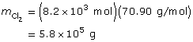
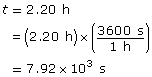

Module 4—Batteries and Balance
 Self-Check Answers
Self-Check Answers
Contact your teacher if your answers vary significantly from the answers provided here.
SC 2.
Section 14.4 1.

The amount of electrons transferred is 0.002 80 mol.
Section 14.4 2.
2 Cl–(aq) → Cl2(g) + 2e–


The mass of chlorine formed is 5.8 x 105 g, or 5.8 × 102 kg.
Section 14.4 3.
Ag+(aq) + 1e– → Ag(s)
The time required is 82.8 min.
Section 14.4 9.
a.
Cr3+(aq) + 3e– → Cr(s)
The mass of chromium deposited is 26 g.
b.
Ni2+(aq) + 2e– → Ni(s)

The time required is 25.4 min.
Section 14.4 11.
Cr2O72–(aq) → Cr(s)
Cr2O72–(aq) → 2 Cr(s)
Cr2O72–(aq) → 2 Cr(s) + 7 H2O(l)
Cr2O72–(aq) + 14 H+(aq) → 2 Cr(s) + 7 H2O(l)
Cr2O72–(aq) + 14 H+(aq) + 12 e– → 2 Cr(s) + 7 H2O(l)

The average current required is 25.0 C/s.
Section 14.4 12.
Prediction
Sn2+(aq) + 2e– → Sn(s)
The mass of tin plated onto the can will be 0.766 g.
Analysis
m(Sn) deposited on can = 118.05 g – 117.34 g
= 0.71 g
The mass of tin electroplated onto the can was 0.71 g.
Evaluation
% difference = |(0.71 g – 0.766 g)| × 100
0.766 g
= 7.3%
The prediction is judged to be verified. A response that the result is inconclusive is also acceptable.